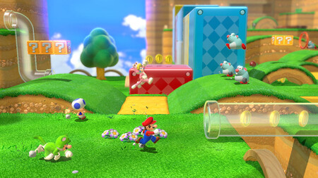

Mario y sus amigos están disfrutando de una fantástica noche de fuegos artificiales en el Reino Champiñón cuando se encuentran con una misteriosa tubería de cristal de la que sale una princesa hada.
Poco tardan en enterarse de que Bowser ha hecho de las suyas. Esta vez se está dedicando a embotellar hadas y luego se las queda como presas. Cuando Bowser vuelve a hacer acto de presencia y se lleva a su nueva amiga en sus narices, Mario, Luigi, Peach y Toad se lanzan por la tubería hasta el Reino Felino para salvarla y para truncar una vez más los planes de Bowser.

El juego sigue un estilo de juego similar a Super Mario 3D Land, que combina la jugabilidad libre de itinerancia de los títulos 3D de Mario con la mecánica de los juegos de plataformas de desplazamiento lateral en 2D de la serie, que van tan lejos como para incluir un banderín y el temporizador en cada nivel. Cuatro personajes jugables diferentes están disponibles inicialmente en Super Mario 3D World: Mario, Luigi, la Princesa Peach, Toad. Además, Rosalina es un quinto personaje jugable desbloqueable.